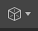

默认情况下，当执行布尔运算（“网格 > 布尔”(Mesh > Booleans)）时，会创建 polyBoolean 节点。
可以使用“布尔堆栈”(Boolean stack)中的以下选项编辑布尔运算。
| 图标 |
元素 |
描述 |
|---|---|---|
|
|
布尔运算 |
更改选定层的布尔运算。有关每个模式的详细信息，请参见布尔运算。
|
|
 |
显示模式 |
选择选定层的显示模式 注： 在布尔堆栈中隐藏对象也会在“大纲视图”(Outliner)中隐藏它，反之亦然。
|
|
|
切换层包含 |
切换层包含。禁用的层不包含在布尔计算中。 |